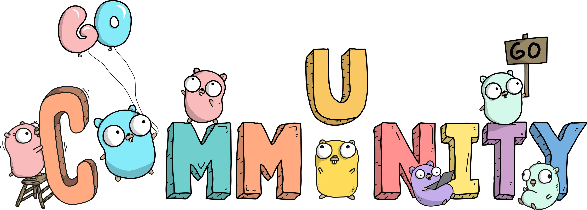

GoCracow #5

Agenda
- 19:00 - 19:05 - Introduction
- 19:05 - 19:40 - Mateusz Szczyrzyca - Runtime - Go's Matrix
- Pizza time!
- 20:00 - 20:30 - Bartłomiej Klimczak - GoBDD and Golang
- Networking
Announcements
Call for papers!
Because we are the community
Because the community is US!
- Slack: #poland na gophers.slack.com
- Discord: #golang na devpolska.org
- Slack: #golang na devspl.slack.com
New feedback form
- Post-its on the door
- There categories: Awesome, So-so, could be better
- You can give an additional comment on them